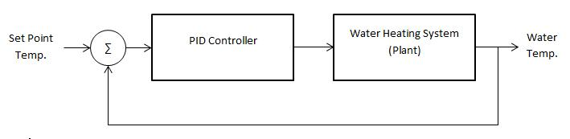
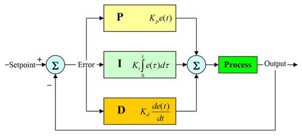
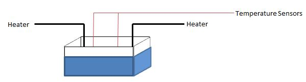
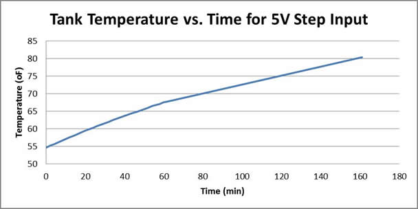
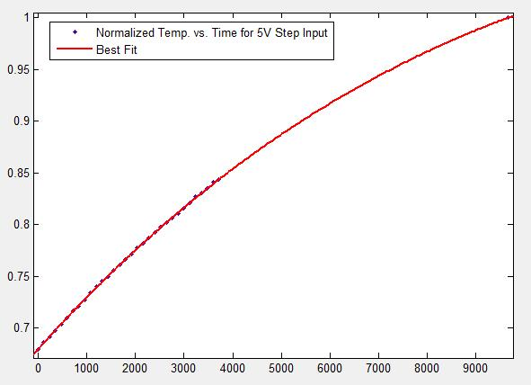
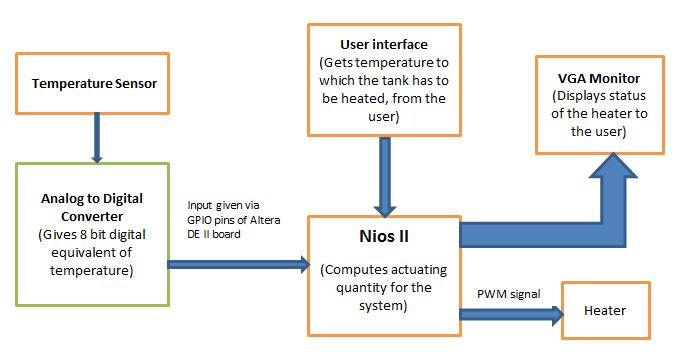
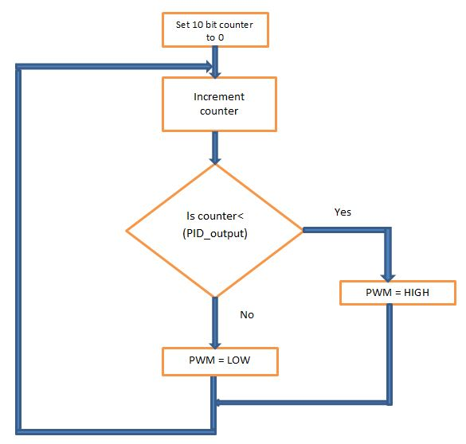

ECE 5760: Final Project (Fall 2010)PID Controller on FPGA for Temperature ControlBy Anandram Sundar (as2454) |
|---|
IntroductionThe objective of this project was to implement a digital PID controller on an FPGA for a control application. We designed a controller to track and maintain a set point temperature of a water tank with lowest possible overshoot while maintaining maximum possible rise time. Multiple controllers and heaters were used to efficiently control the temperature. We used MATLAB to design our controller and develop a model of our system from experimental data. The heaters were driven using a PWM signal from the FPGA that was amplified using BUZ 73 transistors. The motivation behind using FPGA to implement a PID controller rather than microcontrollers or DSPs is because it provides a good balance between performance and cost. Using microcontrollers, although they may be cheaper do not provide enough processing power to effectively perform complex calculations in real-time. Digital signal processors can implement complex algorithms quickly but are expensive.
High Level DesignThe figure below shows the top-level block diagram of the system. Our controller and water heater are connected in a closed loop configuration where the temperature reading from the sensors are fed back to the controller that adjusts the output to accommodate for the error. 
PID ControllerThe PID controller was implemented on the FPGA using NIOS. A PID controller provides compensation to an existing system by trying to minimize the error between the desired output and actual output. It does this by adjusting the process inputs. A PID controller consists of three forms of compensation, namely, Proportional, Integral and Derivative. Below is a block diagram of a PID controller:  To implement this on an FPGA, we had to perform the calculations in discrete time. We read the temperatures at regular time intervals and compared them with the set point. The error value was then fed to the controller that responded accordingly to try to eliminate the error.
Water Heating SystemHeating a water tank to a desired temperature and maintaining that temperature within strict tolerance levels is difficult. This is largely due to a large overshoot. When a desired temperature is reached, the heater is turned off but continues to dissipate heat to the water tank. This raises the temperature beyond the desired point. There are a number of ways we can deal with this problem. One ways is through the use of a predictive controller. Another option would be to have multiple heat sources and multiple temperature sensors, controlling each heater separately based on the minor adjustments required. Below is a diagram of our water tank: 
ModelingIn order to design an optimum controller we needed an accurate system model. We developed our model based on experimental data and using MATLAB curve fitting tool. We gave the heaters a step input of 5V and monitored the temperature of water over time. We quickly noticed that our system was too slow and we observed approximately one degree rise in temperature every 4 minutes. This was mainly because of our power supply limitation and inadequate power from the resistive heaters. To worsen the situation our water tank was of a large capacity. Below is a plot of our data using excel:  Below is a best fit curve obtained from MATLAB from our experimental data:  Due to the slow dynamics of the system and its inability to reach steady state, we weren’t able to model the system as an exponential function but rather modeled it as a sum of exponentials in the following form: Plant Model: G(t) = a*exp(-b*t)+c*exp(-d*t) G(s) = a/(s+b)+c/(s+d) where, a = 2.899, b = 0.00002311, c = -2.219, d = 0.00005388 Controller: K(s) = Kp + (Ki/s) + (Kd*s) where the following values gave the best response, Kp = 10, Ki = 4, Kd = 2 From our MATLAB simulation we obtained the following specifications: 1. Steady State Error = 0%
Hardware/SoftwareWe had the option of doing the PID controller on either hardware or on Nios. We chose to do it on Nios because there weren’t any complex calculations involved and the system had a slow response. The block diagram of the system we built looks like this:  We present details about how each of these blocks works in this section: Temperature sensor: Analog to Digital Converter: The ADC has a reference input, VREF, which lets us set the resolution of the converter. The resolution is given by |Vref|/256. The ADC we used could take a minimum Vref of -5 V. hence, it could give a one bit change for every 20 mV or 2°F. So, we would suggest to anyone building a PID controller which takes inputs from an ADC, to make use of an ADC with a lower Vref and also to use a 16 bit digital output which will improve the precision of calculations. Nios II:
The Nios II gets the reference temperature from the user from the Nios console when SW[0] on the DE II board is activated. The heater has to heat up to this temperature. The Nios also reads the input from the GPIO port and compares it with the reference temperature. It takes one of the following decisions when both the values are available:
We used float for computing the output for the PID controller. This gives better precision. We took a 10 bit output value from the Nios and fed it to the TimerSDRAM module. Generation of PWM signals:  We don’t check for the terminating condition of the counter and simply let it overflow when it reaches 1024. VGA monitor: Implementation of the progress bar: Heater: Some of the other components used in the hardware: MOSFET’s: Operational amplifiers:
Testing and Development:Since our project had a large external circuitry component. So, we had a lot of testing to do in the early stages.
ResultsTo test the performance of our system, we filled the tank with cold water and gave a desired set point temperature to the FPGA. Due to the slow dynamics of our system we only gave a reference voltage that was two to four degrees higher than the initial temperature. This allowed us to analyze the full performance of our design. Below are some links to images of the completed project:
ConclusionWe were able to successfully complete what we intended to. The heater was able to heat the water to the temperature desired. We were pleased that all the hardware that we had assembled worked quite well. However, the response from the setup was slower than we expected it to be. This was primarily because of the water in the tank, cooling the heater. This slowed down the response considerably and we could achieve a rise of 1° F in close to three minutes. The main reasons for this were the low power rating of the heater and the size of the tank that we chose. We would suggest a few other applications to anyone who wishes to work on an FPGA based PID controller in the future. A very interesting and challenging problem would be to build a system that balances an inverted pendulum. Another idea would be to build a system that can keep an object suspended in mid-air by blowing air against it. This would be cooler if the system is synced up with music and the object stays at different heights. This idea was suggested to us by Bruce Land and we found it quite interesting.
AcknowledgementsWe thank Prof. Bruce Land for his ideas and inputs during the course of the project. We wouldn’t have completed this without his help. We also thank him for the hardware parts that we used in this project.
AppendixReferencesVerilog and C Files Circuit Diagrams Division of Labor
|
{kind=link}
{kind=link}
{kind=link}
{kind=link}
{kind=link}
{kind=link}
{kind=link}
{kind=link}
{kind=link}
{kind=link}
{kind=link}